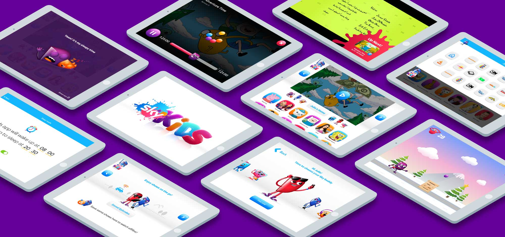
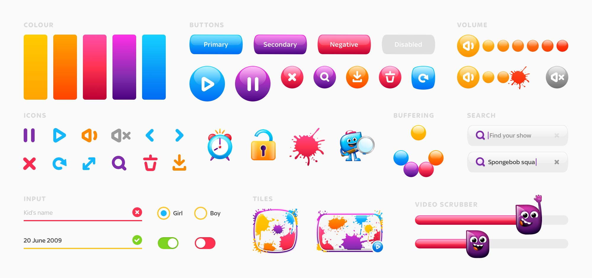
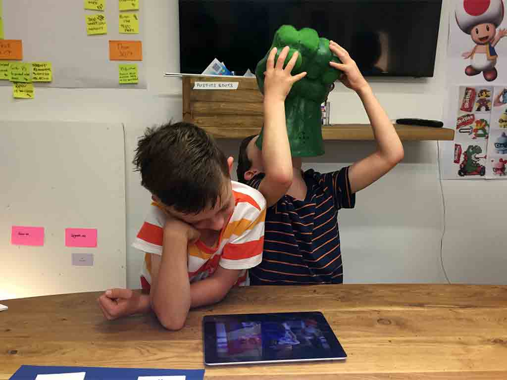
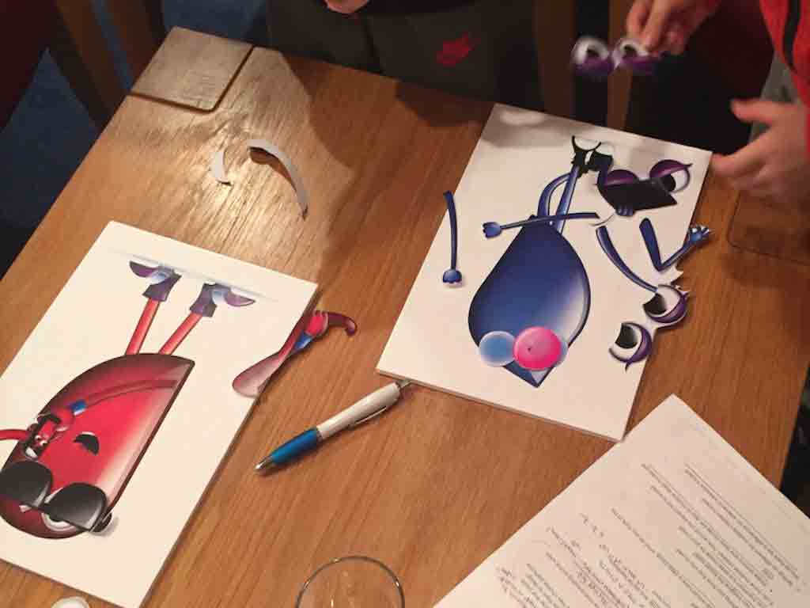

Client
BSkyB
Role
Lead Product Designer
Link
Sky Kids App
Tasks
Branding, UX, UI, Design System
While at Ustwo, we partnered with Sky to help bring to life their new proposition for an app designed specifically for kids and their parents. As a product partner, we contributed visual design, user experience and development expertise, but we also brought our ‘One Team’ mindset and coaching capability to the project.

One-team approach
When Sky approached us they were open to new ways of working and building products, so from the start of the project we formed a 'one-team approach'. This brought together domain expertise from both sides and meant we could embed our ways of working into sky. A lot of these now considered best practice across other teams in the company.
Building the brand
It was clear that for children to embrace a new app, they would need a new visual language that spoke directly to them. Our research taught us that kids don't perceive brands quite like adults, more important than aspirations or narrative is the confidence in a brand to deliver exactly what it is they want. By understanding our users needs, one of the biggest milestones early on was establishing a set of design principles to help guide us in making a playful, and experiential digital brand.

Sensory experience
In creating the brand we wanted to develop more than just vivid, rich visuals. We wanted the interface and the brand to feel alive and tactile, playful with purpose, and incorporate loads of motion, sound and characters to engage with children. We coordinated with character creators and sound designers, as well as animating the interface and collaborating with the development team to ensure that these touches (we call them ‘magic & sparkle’) were built into the app so it ensure lived up to our vision of the brand experience.

Learning through play
As adults we are, for the most part, enjoying an era of flat and sometimes infinitely stripped-back interfaces. These make sense to us, we've watched interfaces evolve logically from skeuomorphic metaphors to irreducibly simple tools and we have learned the patterns and interactions that are now standards. Young children are approaching these tools with fresh minds, building these tools needs to balance usability and efficiency with intuitive and playful interaction.
One of our main principles was that by making the interface fun and playful we could teach kids and introduce them to concepts and patterns. For instance, when they scroll to the end of a page and try to keep scrolling, when they see their avatar clinging to the bottom of the page before springing back, not only is there a moment of playfulness, but they can also orient themselves in the navigation knowing that that’s the end of the screen.
One of our main principles was that by making the interface fun and playful we could teach kids and introduce them to concepts and patterns. For instance, when they scroll to the end of a page and try to keep scrolling, when they see their avatar clinging to the bottom of the page before springing back, not only is there a moment of playfulness, but they can also orient themselves in the navigation knowing that that’s the end of the screen.


A new kind of user
Designing for kids involved a huge amount of user testing, so this was something we planned into every sprint, meaning we could build, measure, learn and iterate in a really close feedback loop.
Spending so much time observing how kids interacted with our product meant that we could learn by validating our assumptions about how they would use the app; children think in such radically different ways to adults that they always amazed us every time in user testing.
In addition to simply testing usability of features, we also involved kids in sketching sessions to come up with ideas around things like characters and how to improve the experience from their point of view. By framing the session in a playful and creative way, we could find out the areas that were truly important to kids and observe how they think about things; insights you can rarely gather by simply asking kids questions.
Spending so much time observing how kids interacted with our product meant that we could learn by validating our assumptions about how they would use the app; children think in such radically different ways to adults that they always amazed us every time in user testing.
In addition to simply testing usability of features, we also involved kids in sketching sessions to come up with ideas around things like characters and how to improve the experience from their point of view. By framing the session in a playful and creative way, we could find out the areas that were truly important to kids and observe how they think about things; insights you can rarely gather by simply asking kids questions.